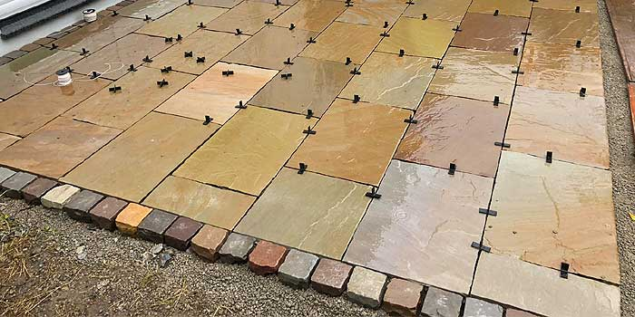
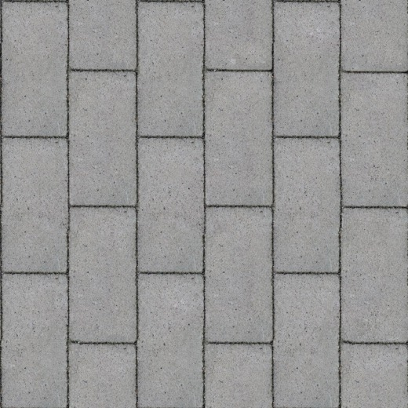
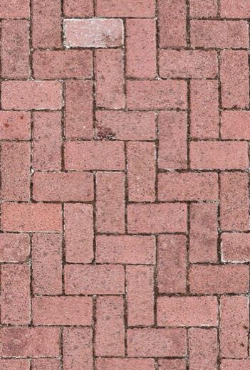
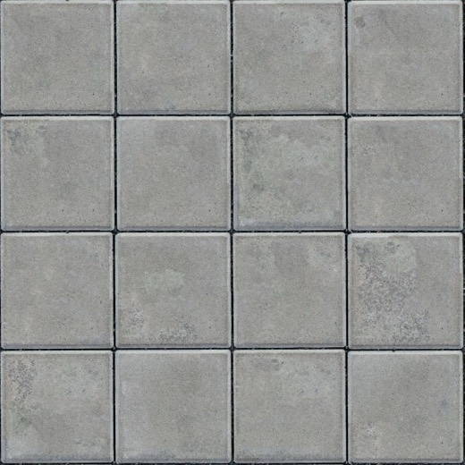
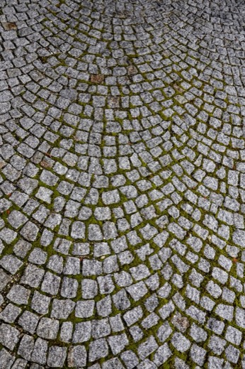

Pflasterverlegung
Ob Terrassen- oder Wegebau, Friesenwälle, Zufahrten, Auffahrten, Stufen u.v.m. – wir kümmern uns gern um Ihre individuellen Wünsche rund um die Pflasterverlegung.
Wir bieten von normalen Pflaster- oder Klinkersteinen, Keramikplatten, Betonsteinplatten bis zu Natursteinen wie Granit u.a. alle möglichen Typen an, um Ihre Wünsche zu Ihrer optimalen Zufriedenheit auszuführen.
Welcher Stein passt?

BetonsteinGroße Auswahl an Formaten und Farben, maßhaltig und günstig. Für Zufahrten, Wege und Terrassen.

KlinkerGebrannter Ton in Rot- und Brauntönen, farbecht und sehr langlebig. Für Wege, Einfahrten und Kanten.

KeramikplattenGroßformatig, dünn und pflegeleicht. Kaum Moos und Flecken, deshalb beliebt für Terrassen.

NatursteinGranit, Sandstein oder Muschelkalk, in jedem Stein anders. Für Flächen mit Charakter, oft als Platten oder Kleinpflaster.